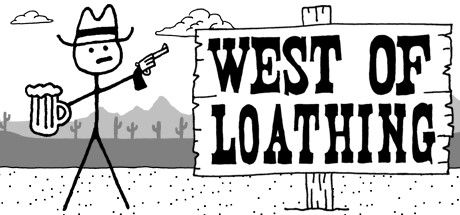
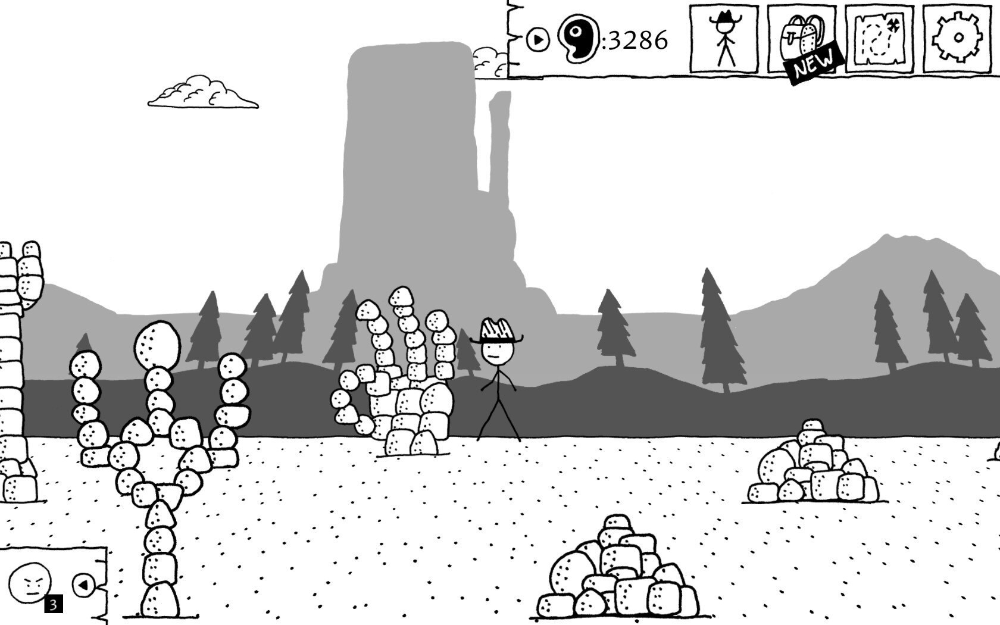

Publishing Info
- Published by: Asymmetric Publications
- Developed by: Asymmetric Publications
- Released: August 10, 2017
Description
Say howdy to West of Loathing -- a single-player slapstick comedy adventure role-playing game set in the wild west of the Kingdom of Loathing universe. Traverse snake-infested gulches, punch skeletons wearing cowboy hats, grapple with demon cows, and investigate a wide variety of disgusting spittoons.
Game Categories
- Genre: Role-Playing(RPG)
- Perspective: Side View
- Setting: Western
- Narrative: Comedy
Quote: "West of Loathing may not be perfect, but it never needed to be. What it gives us, instead, is one of the funniest goddamn games I’ve played all year." -- https://www.destructoid.com/review-west-of-loathing-461976.phtml